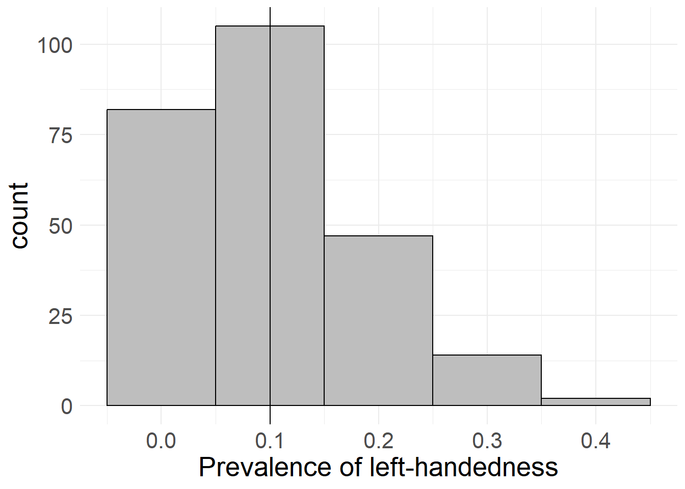

3 Populations and Sampling
This page contains …
… information on sampling, why it (unfortunately) is usually something we have to deal with, and why we can get away with only asking a few hundred or thousand people.
We can’t ask everyone
The unfortunate truth when doing social science research is that we can’t ask everyone we are interested in about their opinions on and reasons for whatever we are interested in. I’ve touched on this in a previous section, but will expand on this here.
In fact, the number of survey respondents may sometimes be significantly lower than the actual number of people they seem to represent. For example, German political polls like the Sonntagsfrage usually consist of 1,000-2,000 respondents, yet should somehow represent the 60ish million people voting in Germany. How can this be?
The Theoretical Population (Grundgesamtheit)
There are some hard limits we have to deal with that we can never avoid, even if we have all the resources we would want. These limits are usually of a methodological nature: The surveys we design can only be answered by people who understand the language and concepts used, and should only be answered by people who have relevant information about our interests, in order to avoid producing large amounts of useless data.
While it might seem as an easy fix to simply translate our survey/research questions to multiple languages to expand this theoretical population, keep in mind that you can never be 100% certain that concepts translate well between languages, as words or ideas might mean different things to different population - or in the worst case, some words might have no reasonable equivalent in the target languages!
Thus, every translation (or more general broadening of the population) leads to respondents bringing different contexts to how they answer your questions. You will get more data this way, but the quality of your theoretical underpinning might suffer significant damage in the process!
Figuring out this theoretical maximum is usually the first step in the data collecting process, and the absolute theoretical maximum of how many people you can ask. Unfortunately, it gets even worse from here on out as you further develop your survey methodology.
Limitation: Access
There are multiple kinds of survey methods you can employ to reach people. We’re probably all still familiar with street or telephone interviews, where you randomly get approached by people wanting to ask you questions. Over the last years, the balance has continuously shifted to instead use online surveys.
Online surveys have many benefits for researchers and respondents: They allow dynamic questioning flow (randomizing question order or only showing questions based on previous answers), provide an easily-scalable way of reaching a lot of people, usually provide data in a easily-usable format once the data collection is done, and - arguably most important - allow respondents to answer the questions whenever they find the time to do so while being very cheap to implement.
However, choosing a survey methodology always limits us to a given group of respondents: We can only ask the people we actually encounter in the streets, if we conduct telephone interviews - who answers unknown calls nowadays (or even has a land line telephone anymore)? And if we conduct online surveys, what about all those people that don’t have access to the internet or a computer in the first place?
Of course, we could combine all these different modes of surveying to reach as many people as possible, but then we run into the issue of potentially asking the same person multiple times - not to mention the insane costs of doing everything.
This limits our theoretical population further to the people we can actually access and provide a means to contribute to our data collection process to. Based on what you want to study, this may be more or less of an issue, but often people don’t even think about this being the case!
Limitation: Interest and Effort
Even if we manage to reach people, there’s no guarantee that they will answer our questions or participate in what we want to do. This disinterest can be rooted in several (non-exclusive) reasons, some of which might be:
- Some people just generally don’t care about or want to participate in surveys. Maybe they don’t want to put in the effort, maybe they distrust you or some general institution, or maybe they just had a shit day and don’t want to deal with people right now.
- Some people might not have the time right now, but will certainly do it later. Unfortunately (and this might sound familiar to some of you), people tend to forget what they planned or promised. It might be a good idea to keep track of who answered your questions already and send periodical reminders to the rest. This way, you might even get some people from the first group to respond, just so that you stop annoying them (or you may get blocked by them instead).
- Some people might want to answer your survey, but then they open it up, complete the first tow pages only to see that they’re stuck at 2% on the progress bar and decide that they don’t have time for this right now. There are several things you can do to counteract this: a) lie on the progress bar and make the first few pages contribute more than the rest. b) keep your survey as short as humanly possible. c) provide an estimated duration in the beginning so that respondents can plan their time accordingly.
Important: If you provide an estimated duration, don’t be too optimistic! Being stuck at 50% progress at the estimated completion time might again drive potential respondents away. Approach it conservatively and consider whether there are words or phrases that might confuse respondents, slowing down their response times!
While interest is not something we can directly influence as it’s usually a core personality trait of our potential respondents, the first two factors are something we can deal with. Therefore, the theoretical population (Grundgesamtheit) for any given research question can usually be defined as:
The group of people we are interested in and are targeting with our questionnaire design, subsetted by the people we can actually reach with our chosen data collection method
You may wonder why I harp on about this. Trust me, it will all make sense in a moment, once we actually talk about …
Sampling
Even if we have a clearly delineated theoretical population and a robust research methodology, we still won’t be able to ask everyone we care about. Going back to the Sonntagsfrage example, imagine the insanity of calling every landline telephone user in Germany on a weekly (or even monthly) basis to ask them about their political preferences. The time and financial costs would be extraordinary.
Luckily, we can employ randomness in order to reduce the amount of effort needed. To explore this, we should first establish why we would even need to ask 60 million people to get insight into the vote distribution of 10 or less parties.
Triangulation
No two people are alike. Everyone comes from a different social and familial background, brings their own experiences with them and has their own moral and philosophical worldviews reinforcing their beliefs. All these factors make every person relevant for our survey if we want to find out what influences their responses.
However, we’re usually not interested in the entire, complex reality, but instead in a simplified subset of variables that can adequately explain most of what we see. To illustrate this, regression takes potentially complex interactions and breaks them down to a linear dependency - no matter how complex an interaction, the result of a linear regression is “Every increase in A increases B by X points.”
Because of this methodological simplification in our analysis, we can also simplify the types of people we are interested in. As long as we ask enough people (and these people are different enough) to give us a wide distribution over every variable and variable combination, we can get away with a way smaller amount of respondents that allow us to triangulate the actual dynamics in a simplified way.
Randomness
Unfortunately (notice a pattern?), we will never know all relevant variables needed for this triangulation before the fact. As such, if we manually try to pick the most varied respondents, we run the risk of artificially crippling our data on many on these unknown dimensions, potentially producing wrong results! We need a process that ensures that we get a lot of respondents that all feature a wide range of answering behaviours on all known and unknown dimensions. This is where randomness comes in.
If we simply pick random people from our total population to answer our survey, we may not be able to guarantee that every value of every variable of interest will be represented. But because of the randomness, we can be sure that almost any known and unknown influences are randomly distributed and therefore do not exert a systematic influence on our calculations and estimations.
At the same time, the issue of missing values in the distribution can be solved by simply increasing the number of people we ask: If we randomly select more people, the chance of encountering many of the possible variable combinations increases significantly.
Differences between Sample and Population
Because we randomly draw respondents from all possible respondents, it is entirely possible that we only encounter a skewed proportion of responses.
Let’s say we wanted to find out how many people are left-handed. We could simply go out and ask all people we can reach whether they are right- or left-handed, but there remains a certain chance that we will (purely coincidentally) only encounter right-handed respondents. In fact, we can quantify this chance: Given the fact that left-handedness seems to have a prevalence of about 10% (see Kovel, Carrión-Castillo, and Francks 2019), if we ask ten people, we will have a 34.87% chance of only encountering right-handed people. In fact, with only one variable to look at and a somewhat reasonable distribution, we only have to ask 100 people to bring the “risk” of only encountering right-handed people down to 0.0027%!
However, this is not the whole story, as even if we encounter left-handed people, we could still be way off the “true” 10% value - we might find 5% left-handedness, or 15% or even 50% (although that is even less likely). In fact, we can simulate the proportions of left-handedness for multiple samples and different sample sizes. Here’s what happens if we draw samples of 10, 100, 1,000 and 10,000 people and ask them if they’re left-handed:
library(ggplot2)
# samples to draw
sample <- 250
# sampling function
sample_left <- function(rep_n, sample_n){
df <- data.frame(sample = seq(1, sample_n), perc = NA)
for(i in 1:sample){
left <- sample(c(1, 0), rep_n, replace = T, prob = c(0.1, 0.9))
df$perc[i] <- mean(left)
}
return(df)
}
left_10 <- sample_left(10, sample)
left_100 <- sample_left(100, sample)
left_1000 <- sample_left(1000, sample)
left_10000 <- sample_left(10000, sample)
ggplot(left_10, aes(x = perc)) + geom_histogram(bins = 5,
fill = "gray", colour = "black") + geom_vline(xintercept = 0.1) +
labs(x = "Prevalence of left-handedness", y = "count") +
theme_minimal() + theme(text=element_text(size=20))
ggplot(left_100, aes(x = perc)) + geom_density(bins = 16,
fill = "gray", colour = "black") + geom_vline(xintercept = 0.1) +
labs(x = "Prevalence of left-handedness", y = "count") +
scale_x_continuous(limits = c(-0, 0.4)) +
theme_minimal() + theme(text=element_text(size=20))
ggplot(left_1000, aes(x = perc)) + geom_density(bins = 30,
fill = "gray", colour = "black") + geom_vline(xintercept = 0.1) +
labs(x = "Prevalence of left-handedness", y = "count") +
scale_x_continuous(limits = c(-0, 0.4)) +
theme_minimal() + theme(text=element_text(size=20))
ggplot(left_10000, aes(x = perc)) + geom_density(bins = 50,
fill = "gray", colour = "black") + geom_vline(xintercept = 0.1) +
labs(x = "Prevalence of left-handedness", y = "count") +
scale_x_continuous(limits = c(-0, 0.4)) +
theme_minimal() + theme(text=element_text(size=20)) 

Getting Close to the Unknowable
As you can see in the simulations above, a low sample size leads to an extremely broad spread in possible values for left-handedness (it’s between 0% and 40% with only 10 cases!), whereas an increased sample size produces values that are very close to the “true” value we chose.
While there may still be cases where we mis-judge the proportion of left-handedness, a larger sample size means that these mistakes are closer to the “true” value, as extreme values get way less likely. As you can also see, the gains in accuracy provide diminishing returns at a certain point, with 1,000 responses already providing a pretty accurate picture.
This example not only works for variables with a known distribution. If we only draw enough random respondents from our pool, sheer randomness will almost* guarantee that we’ll end up with a distribution similar to the “true” distribution. Of course, the more variables (=dimensions) we want our data to be representative on, the bigger our sample needs to be - after all, we’re not only introducing a new variable as an additional range, but also every possible value combination between variables. This is another reason to keep the core research model (dependent and independent vars) as small as possible, in order to reduce the needed sample size.
*Again: See the topic on significance for more on this.
What Does our Sample Represent
I’ve previously mentioned that the total population (Grundgesamtheit) represents the amount of people we theoretically want to reach and physically can reach. While the first part is usually pretty clear and thought about when doing research, the second part is sometimes forgotten, with dire implications for the underlying model.
You see, our random selection only works for people that can theoretically participate in our surveys. The personality traits of people who can’t even clear that hurdle cannot be randomized and are therefore probably not well-represented in the final data. This goes back to what I’ve said about data collection methods in the beginning: If you conduct an online survey, you will systematically miss certain parts of the population that do not have stable internet access or engage with online surveys (predominantly old people or socially disadvantaged). Therefore, our sample can only be representative for the people that would have participated if given the option.
While this is probably obvious when conduction your own research, where this really matters is when working with other people’s data. You should always ask yourself “What was the data collection process and what groups were targeted?”, since it’s technically only these groups that your data can make claims about.
I will ramble more about this on the next page, because this issue is of central importance when it comes to significance.
It is an unfortunate truth that people use pre-selected samples to make generalized out-of-sample claims that they should not make based on the underlying methodology. While this usually works out fine anyway (surprisingly, when you simplify the world to general trends, many of the complexities of humanity fall away in the process), it is something you should keep in mind when you see someone making weird, over-generalized claims somewhere - they might be full of methodological shit.
Last modified: 2023-09-20 11:14, R version 4.3.1
Source data for this page can be found here.